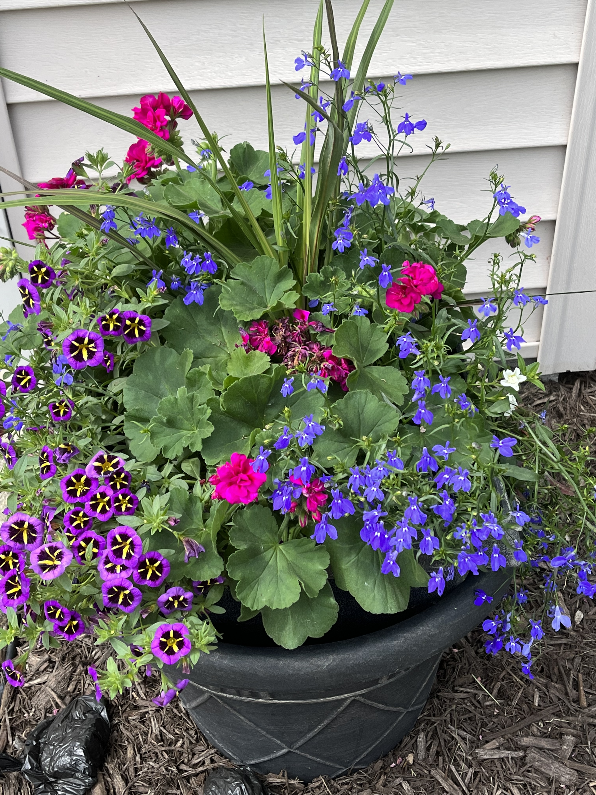
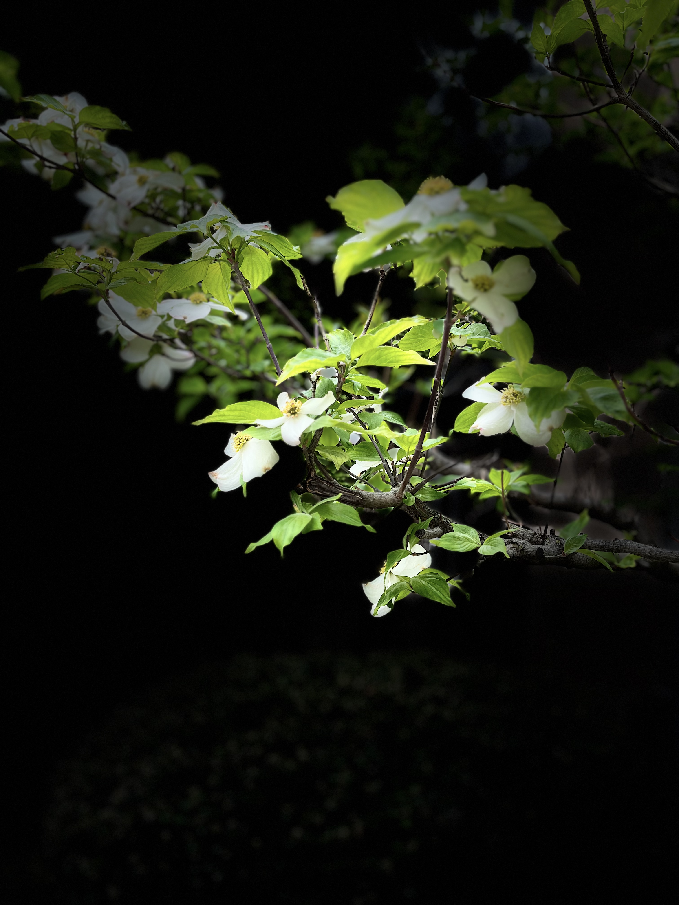

Discover Local Parks
Parks provide wonderful opportunities to enjoy spring. A walk through a park can reveal blooming trees, colorful flowers, and peaceful places to relax.
The following images show some of the sights that can make a spring park walk memorable.
Park Walk Collection





